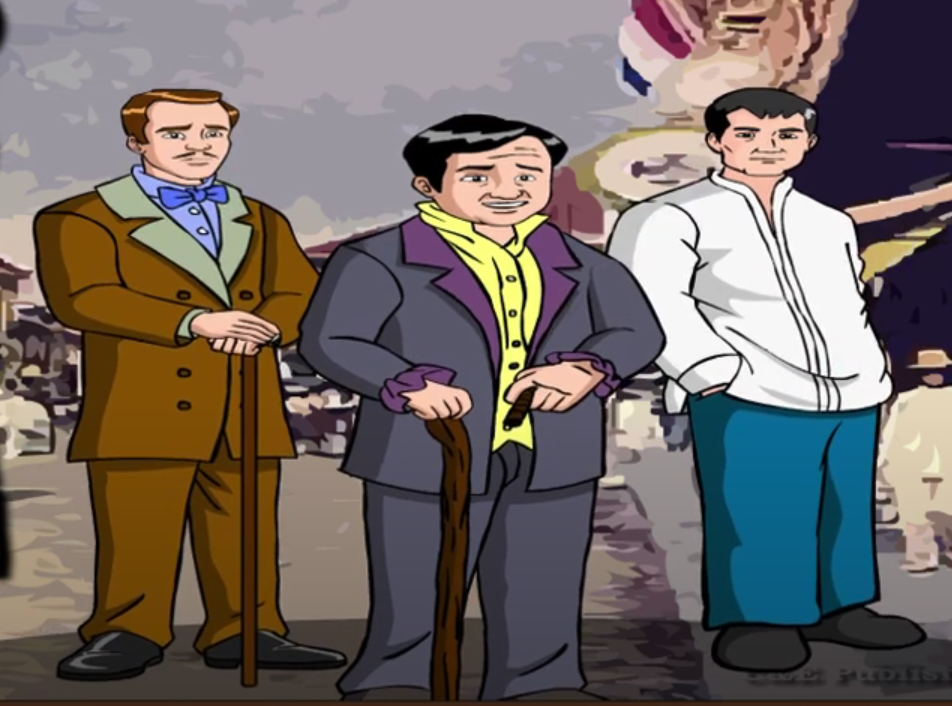

Kabanata 11: Ang mga Makapangyarihan

Sa paningin ng ilan, inaakala nilang sina Don Rafael, Kapitan Tiago at ang alkalde ng bayan ang mga makapangyarihan sa San Diego.
Itinuturing na makapangyarihan si Don Rafael dahil siya ang may-ari ng pinakamalaking lupain sa San Diego at pinasasalamatan siya ng mga mamamayan nito sa mga pabor na kaniyang ibinigay para sa kanila.
Gayunpaman, hindi niya ipinatanaw na utang na loob ang mga ito, kaya’t hindi siya nagkarooon ng mga kakampi.
Samantala, kilala naman si Kapitan Tiago, na pinatutunayan ng pagsalubong ng banda sa kanya tuwing dumarating siya bayan.
Marami rin siyang mga pautang subalit pinagtatawanan naman ng nakararami sa pagiging sunud-sunuran sa simbahan. Kapag nakatalikod, tinatawag siyang Sakristan Tiago ng maraming mamamayan ng San Diego.
Isa pa ay ang kapitan sa bayan o ang alkalde, ngunit madalas na hindi siya nakapag-uutos sa halip, siya pa mismo ang inuutusan o pinagsasabihan. Tumatanggap lamang siya ng pananagutan mula sa Kapitan Heneral.
Usap-usapan din ang kaniyang ibinayad upang makuha ang naturang posisyon kasama ang ilang pangungutya, kapalit ang kakarampot na sweldong kaniyang tinatanggap.
Batay sa mga ito, masasabing wala sa mga unang tinukoy ang makapangyarihan sa San Diego.
Isa sa mga itinuturing na makapangyarihan sa bayang iyon ay si Padre Salvi, dahil siya ang kura ng San Diego.
Siya ang humalili kay Padre Damaso kaya naman madalas siyang maikumpara rito. Kilala siya sa pagpapamulta ng bawat pagkakamali ng kaniyang nasasakupan.
Kalaban niya sa pagiging makapangyarihan ang alperes. Napang-asawa niya ang isang Pilipina na kulang sa tamang asal at kalinisan sa katawan, ang dating labandera niyang si Donya Consolacion.
Dahil nga kapwa may kapangitan ang ugali, madalas mag-away ang dalawa at hindi nahihiyang maghiyawan at magsakitan sa harap ng ibang tao.
Sa tuwing nakararating kay Padre Salvi ang pag-aaway ng mag-asawa, napangingiti ito, nag-aantanda, at magdarasal.
Samantala, sa tuwing may dadalaw naman sa alperes, nagtatanong ito kung dadalaw ang kausap sa kura at binabalaan niya ito kaugnay sa ihahaing tsokalate ng kura.
May palatandaan daw kung mainam o hindi ang ihahandang tsokolate kung ang sinabi ay “tsokolate, a” o “tsokolate, e”.
Gayunpaman, ang babalang ito ay pinaniniwalaang gawa-gawa lamang. Sa tuwing magsisimba ang alperes, ipinasasara ni Padre Salvi ang pasukan ng simbahan at magsisimula itong magsermon nang tila walang hanggan.
Kapag binuksanang pinto, magwawala ang alperes at kapag nakita niyang palakad-lakad ang mga sakristan o katulong ng kura, kakaladkarin niya ito at ikukulong.
Gayunpaman, kapag nagkikita ang dalawa, wala silang sinasabing negatibo sa bawat isa at nagkakamay. Magkaibigang putik sa tunay na buhay.
Sila ang itinuturing na makapangyarihan sa San Diego ang kura bilang puno ng Simbahang Katoliko, at ang alperes naman bilang puno ng estado.
Repleksiyon
Ang repleksyon ko ay ang kapangyarihan ay hindi nasusukat sa dami nang salapi o kayamanan at taas nang ranggo ang kapangyarihan ay nasusukat kung gaano ka kagaling mamuno at sa ugali.